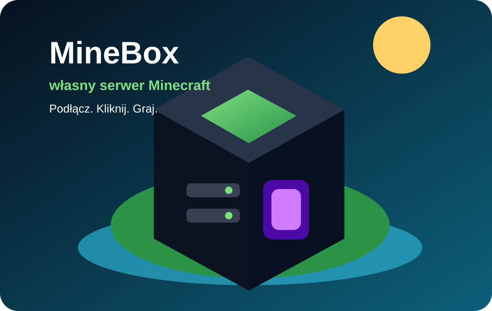
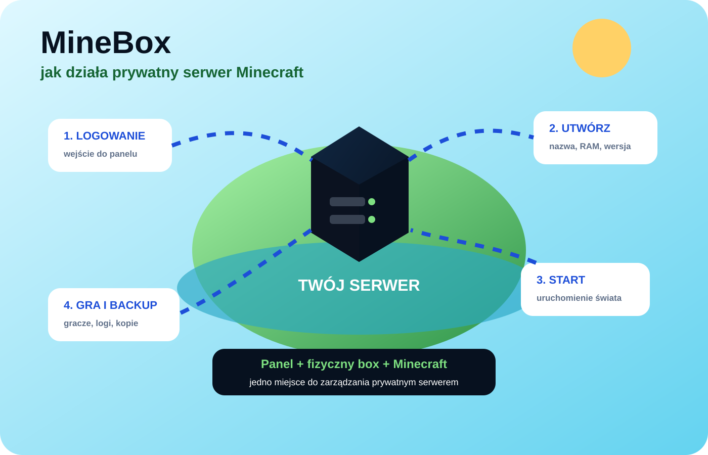

MineBox / panel + plugin
Serwer Minecraft konfigurowany z panelu.
MineBox ma łączyć fizyczny box, prosty panel WWW i plugin MineBoxUltimate. Użytkownik wybiera ustawienia serwera, a panel pokazuje status, graczy i podstawowe akcje.

Konfiguracja serwera
To powinno być główne na stronie.
Nie sama reklama boxa, tylko pokazanie co użytkownik naprawdę ustawi przed uruchomieniem świata.
Co konfigurujemy?
- wersję Minecraft i silnik: Vanilla / Paper, później Forge albo Fabric,
- RAM, sloty i podstawowe ustawienia świata,
- tryb gry, poziom trudności, whitelistę i seed,
- backup świata oraz listę pluginów startowych,
- włączenie pluginu MineBoxUltimate do synchronizacji z panelem.
MineBoxUltimate
Strona ma pokazywać, że mamy własny plugin.
Plugin nie jest ozdobą. To element łączący serwer Minecraft z panelem MineBox.
Status serwera
Plugin może wysyłać do panelu informację, ilu graczy jest online, jaka jest wersja Minecraft i czy serwer działa.
Komendy
Na serwerze są komendy MineBox i VIP, więc panel może być później spięty z funkcjami w grze.
VIP / sklep
Plugin ma też część VIP. To daje kierunek pod przyszłe pakiety, role albo dodatki dla serwera.
Panel MineBox
Podgląd tego, co ma być w panelu.
Na stronie pokazujemy konkrety: konfiguracja, gracze, status, backup i plugin.
Schemat
Panel → box → plugin → gracze.
Tak powinna być opisana architektura MineBoxa.

Status projektu
Najpierw działający przepływ.
Strona ma pokazywać prawdziwy kierunek: konfigurator serwera + plugin + panel.
Kontakt
Chcesz testować MineBoxa?
Napisz, jaki serwer chcesz skonfigurować: wersja, gracze, pluginy, mody.
kontakt@mine-box.pl